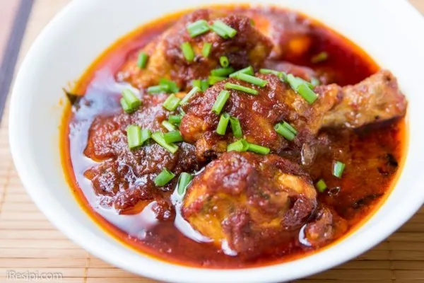

Ayam Masak Merah
Ayam masak merah will always remind me of my late grandma and the quiet love she showed through her cooking. After a long, tiring day at school, I would come home to the familiar smell of her ayam masak merah simmering in the kitchen, rich with spices and warmth. She would always insist that I eat, even when I told her I was already full, gently but firmly adding more rice and chicken onto my plate. At the time, I never thought much of it, but now I realise how precious those moments were. Little did I know that the ayam masak merah she cooked, filled with her care and patience, would be the best I would ever taste, and a memory I will carry with me forever.